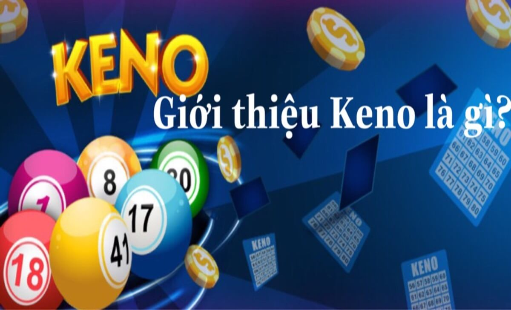
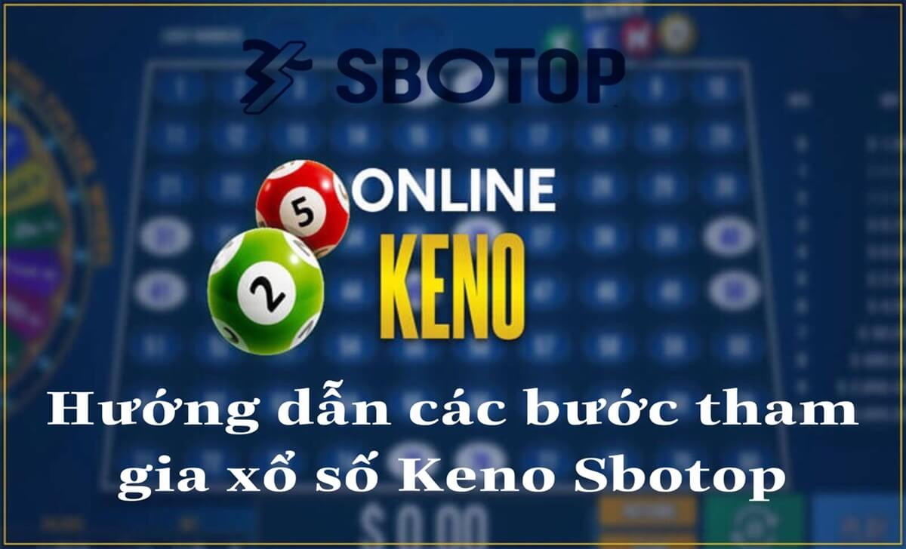

Home – Keno Sbotop – Keno là gì? Những điều cần biết về trò chơi xổ số Keno
KENO LÀ GÌ? NHỮNG ĐIỀU CẦN BIẾT VỀ TRÒ CHƠI XỔ SỐ KENO
Keno là một trò chơi xổ số phổ biến trên thế giới, có nguồn gốc từ Trung Quốc cổ đại. Loại trò chơi này đang có mặt tại các sòng bạc, quán bar, nhà hàng, hoặc trực tuyến. Trong bài viết này, chúng tôi sẽ giới thiệu về Keno là gì, những điều cần biết về trò chơi xổ số Keno, và hướng dẫn các bước tham gia xổ số Keno tại Sbotop nhé!
Giới thiệu Keno là gì?
Tìm hiểu nguồn gốc trò chơi xổ số Keno
Xổ số Keno có nguồn gốc từ Trung Quốc, được cho là ra đời vào thời kỳ nhà Hán (202 TCN – 220 CN). Ban đầu, trò chơi này sử dụng 120 ký tự Trung Quốc, được chọn ngẫu nhiên từ một bài thơ cổ xưa. Người chơi sẽ đặt cược vào một số ký tự, và nếu trùng khớp với kết quả rút ra, sẽ nhận được tiền thưởng.
Ngay sau đó, trò chơi này được truyền bá đến các nước khác, như Mỹ, Pháp, Anh, và được đổi tên thành Keno. Các ký tự Trung Quốc cũng được thay thế bằng các số từ 1 đến 80, để dễ dàng hơn cho người chơi. Hiện nay, xổ số Keno được chơi ở nhiều nơi, tiêu biểu tại các sòng bạc trên mạng internet, đặc biệt tại nhà cái Sbotop.
Ưu điểm và sự hấp dẫn trò chơi Keno

Giới thiệu Keno là gì?
Theo một số nguồn thông tin cho biết, Keno là một trò chơi xổ số mà người chơi phải chọn một số lượng số từ một bảng số có 80 số, từ 1 đến 80. Sau đó, máy xổ số sẽ quay ra 20 số ngẫu nhiên, và người chơi sẽ so sánh số của mình với số của máy. Nếu có trùng khớp, người chơi sẽ nhận được giải thưởng tương ứng với số lượng số trùng khớp và mức đặt cược.
Keno là một trò chơi may rủi, không cần kỹ năng hay chiến thuật đặc biệt. Người chơi chỉ cần chọn số mình thích, đặt cược, và chờ kết quả. Keno có thể chơi nhiều lần trong một ngày, với mỗi lần quay chỉ mất vài phút. Ngoài ra, trò chơi này đang phát triển trên các nền tảng cá cược với nhiều lựa chọn về mức đặt cược, số lượng số chọn, và thời gian quay.
Những điều cần biết về trò chơi xổ số Keno
Những điều cần biết về trò chơi xổ số Keno
Để chơi Keno, người chơi cần biết về các quy tắc, và các chiến thuật Keno, cụ thể như:
Quy tắc
Người chơi nên tìm hiểu kỹ về quy tắc của nơi chơi Keno, bao gồm số lượng số chọn, mức đặt cược, cách tính giải thưởng, và thời gian quay. Anh em cũng nên kiểm tra kỹ bảng số của mình trước khi đặt cược, và giữ lại bảng số để nhận giải thưởng nếu trúng.
Chiến thuật Keno
Bên cạnh đó, các cược thủ nên chọn số mình thích, không cần phải theo bất kỳ hệ thống hay mẫu số nào. Người chơi cũng nên đặt cược một mức phù hợp với ngân sách của mình, không nên quá tham lam hay quá tiết kiệm. Anh em cũng nên chơi nhiều lần, nhưng không nên chơi quá lâu hay quá nhiều, để tránh mất kiểm soát hay mệt mỏi.
Hướng dẫn các bước tham gia xổ số Keno tại Sbotop
Hướng dẫn các bước tham gia xổ số Keno tại Sbotop
Sbotop là một trong những trang web chơi Keno trực tuyến uy tín và chất lượng với giao diện thân thiện, dễ sử dụng, và bảo mật cao. Để tham gia xổ số Keno tại Sbotop, người chơi chỉ cần thực hiện các bước sau:
.jpg)
Đăng nhập vào hệ thống sbotop
.jpg)
Nạp tiền vào tài khoản chơi Sbotop
Chọn trò chơi Keno
Tiến hành đặt giá vé cược
Vậy là chúng tôi vừa giải đáp đến anh em những thông tin về Keno là gì? Những điều cần biết về trò chơi xổ số Keno đầy đủ và chi tiết nhất. Hy vọng sẽ giúp anh em có những thông tin bổ ích về sảnh game thú vị này nhé!